Einleitung
Zweck
Dieses stellt das Handbuch der "Privacy Management Platform". Es soll sowohl den Laien als auch den erfahrenen Benutzer und Entwickler bei der Verwendung der PMP unterstützen. Auf eine gute Verständlichkeit wird Wert gelegt.
Leserkreis
Das Handbuch richtet sich an folgende Lesergruppen:
- den unerfahrenen Benutzer
- den erfahrenen Benutzer
- den Entwicklern von Ressourcengruppen (für die PMP)
- den Entwicklern von Applikationen inkl. deren Service-Levels
- dem Kunden
- den Betreuern des Studienprojekts
Konventionen
In diesem Dokument werden mehrere Konventionen verwendet, um knapp, übersichtlich, lesbar und treffend zu sein:
- Für Überbegriffe wie Benutzer oder Entwickler wird das generische Maskulinum verwendet. Da die Deutsche Sprache hier keine zufrieden stellende Alternative kennt, sind damit selbstverständlich auch alle weiblichen Leserinnen angesprochen.
- In diesem Dokument wird die deutsche Sprache verwendet; dabei ist allerdings zu beachten, dass sich übernommene oder übersetzte Begriffe aus dem Englischen nicht vermeiden lassen. Diese werden dann jedoch grammatikalisch an die Deutsche Sprache angepasst.
- Ein Verweis in diesem Dokument auf andere Kapitel wird so dargestellt:
Gliederung
Der besseren Übersicht wegen unterteilt sich das Handbuch in die einzelnen Benutzergruppen:
- "" richtet sich an Benutzer, die die PMP verwenden möchten. Dieses Kapitel enthält eine Beschreibung aller im einfachen Modus () verfügbaren Funktionen, sowie eine Beschreibung der Funktionen, die erst im erweiterten Modus () verfügbar sind.
- "" richtet sich an Benutzer, die Ressourcengruppen oder Applikationen für die PMP entwickeln möchten. Der Unterabschnitt "" geht auf die Erstellung von Ressourcengruppen ein. Dagegen beschriebt "" wie Service-Levels definiert und in eigene Applikationen integriert werden können.
Grundbegriffe
Dieser Abschnitt erläutert einige Grundbegriffe die im Kontext der PMP verwendet werden.
Ressourcen & Privacy-Settings
Ressourcen bieten Anwendungen Zugriff auf die verschiedenen Funktionen eines Android-Gerätes. In der PMP werden einzelne, inhaltlich zusammengehörige Ressourcen in Ressourcengruppen zusammengefasst. Diese Gruppen können dann auf dem Gerät installiert werden.
Jede Ressource definiert mehrere so genannte Privacy-Settings. Diesen können verschiedene Werte zugewiesen werden (etwa erlauben oder nicht). Abhängig vom gesetzten Wert ist ein Zugriff auf eine Funktion der Ressource möglich (ist etwa des Privacy-Setting "Datei lesen" gesetzt, das Setting "Datei schreiben" jedoch nicht, so erlaubt die Ressource "Dateisystem" nur das Auslesen einer Datei, nicht jedoch das Schreiben in eine Datei).
Service-Features
Jede PMP-Applikation legt fest, welche Funktionen bestimmter Ressourcen sie benötigt und welche Dienste sie hierfür dem Benutzer anbietet. Diese Vereinbarung wird als Service-Features bezeichnet. Eine Applikation besitzt in der Regel mehrere Service-Features.
Im Detail legt jedes Service-Feature fest, welche Ressourcen, und welche Funktionen dieser Ressource, benötigt werden. Im Gegenzug bietet die Applikation dem Anwender für den Zugriff auf diese Ressource bzw. dieser Funktion bestimmte Funktionalitäten an.
Es können bei Bedarf mehrere Service-Features gleichzeitig aktiviert werden, wodurch der Funktionsumfang der Applikation erweitert werden kann.
Presets
Über die Presets können mehrere Service-Features zusammengefasst und somit bei Bedarf gemeinsam aktiviert oder deaktiviert werden.
Systemanforderungen
Um PMP installieren und ausführen zu können, muss auf dem Zielgerät mindestens Android in der Version 2.1.1 installiert sein. Weitere Anforderungen werden vom Basissystem der PMP nicht gestellt. Es ist jedoch möglich, dass bestimmte Ressourcengruppen Funktion benötigen, die nicht auf allen Geräten verfügbar sind (z. B. aktive GSM-Verbindung oder GPS-Ortung). In der Beschreibung der jeweiligen Ressourcengruppe finden Sie in der Regel Informationen über deren Systemanforderungen.
Anwender
Dieser Abschnitt richtet sich an die Benutzer der PMP.
Installation
Die PMP wird wie eine gewöhnliche Android-Applikation installiert. Hierzu wird entweder die apk-Datei der PMP-Anwendung auf das Gerät übertragen, oder die PMP wird aus dem Android Market ausgewählt. Folgen Sie anschließend bitte den Anweisungen des Android-Betriebssystems.
Sprache
Die Beschriftung der Elemente der Benutzeroberfläche erfolgt in der Sprache, die als Geräte-Sprache in Android festgelegt ist. Gegenwärtig enthält die PMP nicht für jede Sprache eine passende Übersetzung. Sollte keine Übersetzung in der gewählten Gerätesprache vorhanden sein, erfolgt die Beschriftung der Benutzeroberfläche in englischer Sprache.
Da, wie bereits erwähnt, die Standard-Beschriftung auf Englisch erfolgt, wird auch in den Bildschirmfotos und bei der Benennung der Schaltflächen in den folgenden Abschnitten die englische Variante verwendet.
Hauptmenü
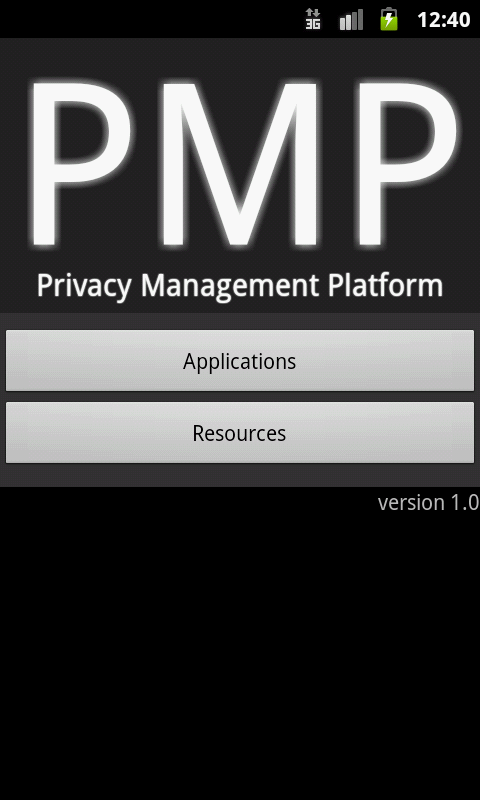{kind=link}
Ausgangspunkt der Verwendung der PMP bildet das Hauptmenü, das sich beim Starten der Anwendung öffnet. Dieses bietet Ihnen Zugriff auf alle Funktionen der PMP:
- Anzeigen und Verwalten aller installierter Applikationen über die Schaltfläche "Apps" (siehe ).
- Anzeigen und Verwalten aller installierten Ressourcen über die Schaltfläche "Resources" (siehe ).
- Anzeigen und Verwalten der Presets aller installierten Applikationen über die Schaltfläche "Presets" (siehe ). Diese Funktion steht nur bei aktiviertem Experten-Modus zur Verfügung.
- Ändern der Einstellungen der PMP über die Schaltfläche "Settings" (siehe ).
Unterhalb der Schaltflächen werden Informationen über die Anzahl der installierten Applikationen und Ressourcen sowie der erstellten Presets angezeigt. Eine Angabe der installierten PMP-Version folgt unterhalb diesen Informationen.
Anwender-Modi
{kind=link}
Die PMP lässt sich in zwei Modi betreiben: Im einfachen Modus (als Simple Mode bezeichnet), stehen dem Benutzer die wichtigsten Funktionen zur Verfügung. Werden alle Funktionen benötigt, lässt sich das System in den experten Modus (Expert Mode) schalten.
Modus-Wechsel
Der Wechsel zwischen einfachem und erweitertem Modus erfolgt über den Einstellungs-Dialog der PMP. Dieser wird über die Schaltfläche "Settings" im Hauptmenü aufgerufen. Über die dort vorhandene Schaltfläche "Expert Mode" lässt sich der experten Modus aktivieren bzw. deaktivieren.
Befindet sich die PMP im erweiterten Modus, erscheint ein Häkchen im rechten Bereich der Schaltfläche. Durch Antippen der Schaltfläche wird zwischen den Modi hin- und her gewechselt.
Einfacher Modus (Simple Mode)
Der einfache Modus ist auf Anwender mit geringen Kenntnissen angepasst. Daher enthält er nur die wichtigsten Funktionen um den Benutzer nicht zu überfordern.
Experten-Modus (Expert Mode)
Der Experten-Modus gibt Zugriff auf alle Funktionen der PMP. Da sich daher unerfahrene Benutzer überfordert fühlen könnten, richtet sich dieser Modus an erfahrene Benutzer, die vollen Zugriff auf den Funktionsumfang haben möchten.
Die Abgrenzung zwischen den beiden Modi erfolgt in der nachfolgenden Beschreibungen durch Hinweise der Form "Expert Mode:". Die diesem Hinweis folgenden Funktionen sind ausschließlich im Experten-Modus verfügbar.
Applikationen
Applikationen installieren
Die Installation von PMP-Applikationen unterscheidet sich nicht von der Installation gewöhnlicher Applikationen. Im Allgemeinen benötigen PMP-Applikationen selbst keine Zugriffsrechte auf System-Funktionen, da diese Zugriffe über die PMP-Ressourcengruppen erfolgen.
Installierte Applikationen anzeigen & Aktvionenmenü
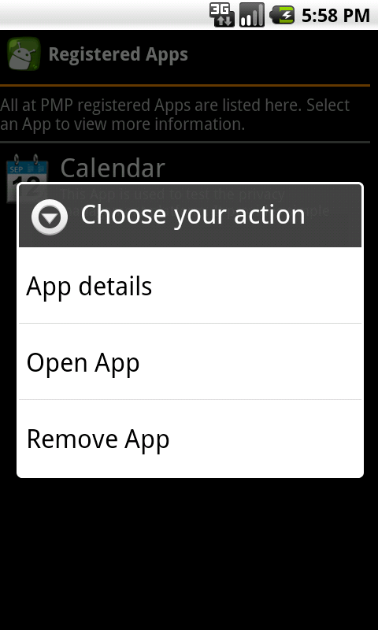{kind=link}
Über die Schaltfläche "Applications" im Hauptmenü der PMP lassen sich alle momentan auf dem Gerät installierten PMP-Applikationen anzeigen. Durch das Antippen einer Anwendung erhalten sich weitere Informationen zu dieser Applikation. Durch langes Drücken auf eine Applikation öffnet sich das zugehörige Aktionsmenü. Über dieses können weitere Aktionen vorgenommen werden (siehe folgende Kapitel).
Details zur Applikation anzeigen
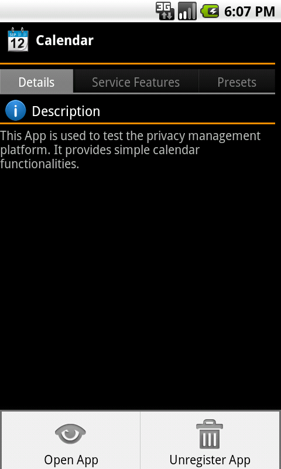{kind=link}
Über den Eintrag "View Dateils" des Aktionenmenüs (siehe ) oder durch kurzes Antippen einer Applikation in der Applikationenliste lassen sich weitere Informationen über die entsprechende Applikation anzeige. Der hierdurch geöffnete Dialog unterteilt sich in drei Bereiche, die über die Reiter zugänglich sind
- Unter "Description" werden detaillierte Informationen über die betreffende Anwendung angezeigt
- Unter "Service Features" werden alle von der Applikation angebotene Service-Features angezeigt und das Ändern dieser ermöglicht (siehe )
- Unter "Presets" werden alle der Applikation zugewiesene Presets angezeigt. Zudem ist es dort möglich, weitere Presets zu erstellen oder bestehende zu ändern(siehe )
Über das dem Reiter "Details" zugeordnete Menü (Gerätetaste "Menü") kann die Applikation direkt gestartet bzw. geöffnet oder aus der PMP entfernt werden siehe ).
Applikationen deinstallieren
Das Entfernen der Applikation aus der PMP erfolgt über den Eintrag "Remove App" des Aktionsmenüs (siehe ) oder durch den Menü-Eintrag "Unregister App" (siehe ), wodurch die Applikation aus der PMP entfernt wird. Durch erneutes Starten der Applikation über die Applikationenauswahl von Android lässt sich Applikation wieder in der PMP registrieren.
Die eigentliche Deinstallation der PMP-Applikationen, d. h. das endgültige Entfernen der Applikation vom Gerät, erfolgt wie bei gewöhnlichen Applikationen (über die Deinstallationsfunktion von Android).
Service-Feature anzeigen & einstellen
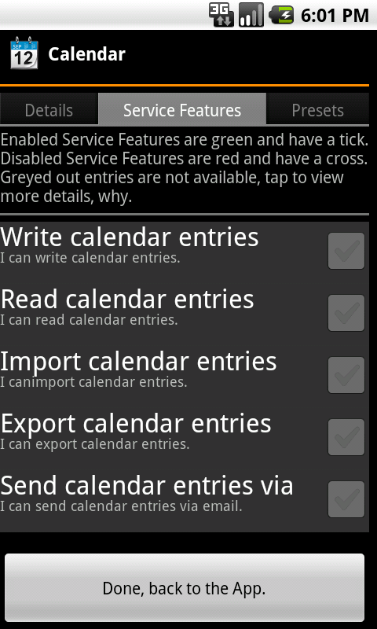{kind=link}
Einfacher-Modus: Service-Levels lassen sich nur ändern, wenn der Experten-Modus deaktiviert ist.
Alle Service-Features, die von einer Applikation angeboten werden, lassen sich durch Antippen der entsprechenden Applikation und Auswahl des Reiters "Service Features" anzeigen. Service-Features, die gegenwärtig aktiviert sind, werden grün unterlegt. Durch Antippen eines Service-Features, werden weitere Informationen sowie die benötigten Ressourcen angezeigt. Sind alle benötigten Ressourcen installiert, kann das Service-Features nun über die Schaltfläche "Enable" aktiviert werden bzw. wenn es bereits aktiviert ist, über die Schaltfläche "Disable" deaktiviert werden.
Um deaktivierte Service-Features verwenden zu können, müssen die von diesen benötigten Ressourcen installiert sein (siehe ). Wurden die fehlenden Ressourcen installiert, kann der Service-Feature-Dialog erneut geöffnet und ein nun neu verfügbares Service-Feature ausgewählt werden.
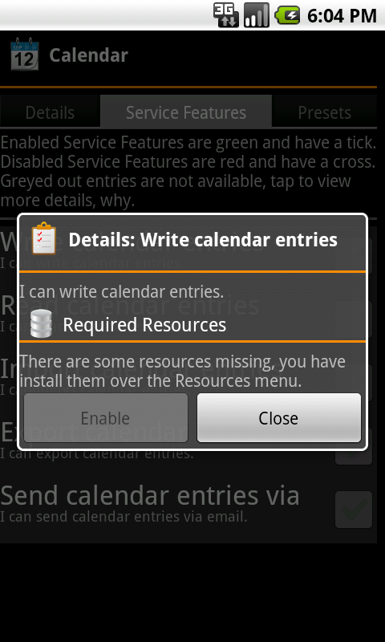{kind=link}
Neben dem Setzen der Service-Feature durch das manuelle Auswählen der Applikation, lassen sich die Service-Features auch auf folgende Arten einstellen:
- Beim ersten Starten der Applikation, wobei automatisch der obige Dialog geöffnet wird
- Beim Aufrufen einer Funktion innerhalb der Applikation, die ein bestimmtes Service-Feature benötigt, das noch nicht aktiviert ist. Hierbei wird ein Abfrage-Dialog angezeigt, der den Benutzer auf das nicht aktivierte Service-Feature hinweist. Über die Schaltfläche "Change" lässt sich dann über den obigen Dialog das Service-Feature ändern
Presets
Experten-Modus: Diese Funktionen sind nur zugänglich, wenn der Experten-Modus aktiviert ist.
Presets anzeigen, löschen & Aktionsmenü
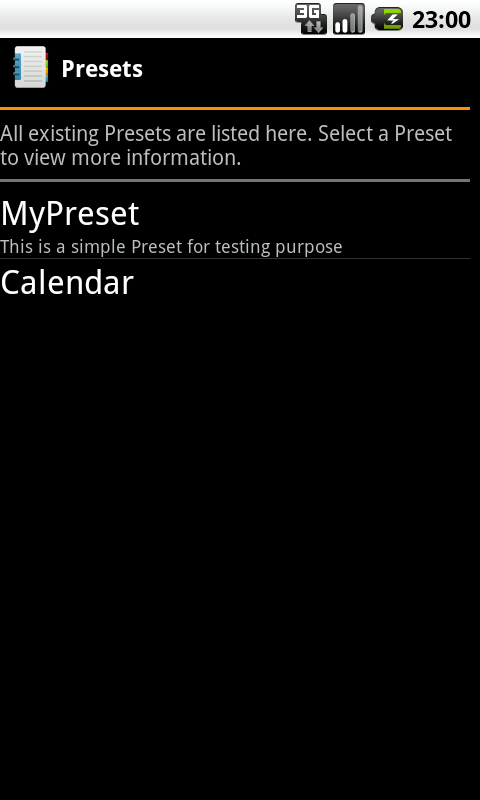{kind=link}
Über die "Presets"-Schaltfläche im Hauptmenü werden alle gegenwärtig erstellten Presets angezeigt. Durch ein langes Drücken auf ein Preset öffnet sich das zugehörige Aktionsmenü. Über dieses kann der Name und die Beschreibung des Presets geändert, oder das Preset gelöscht werden. Durch kurzes Tippen auf ein Preset werden alle Details zu diesem angezeigt. Diese beinhalten die dem Preset zugewiesenen Applikationen (unter dem Reiter "Assigned Apps") sowie die zugewiesenen Privacy-Settings (unter dem Reiter "Assigned Privacy Settings"). Die Privacy-Settings werden hierbei nach ihrer zugehörigen Ressource gruppiert. Um die Privacy-Settings einer Ressource anzuzeigen, muss auf die entsprechende Ressource getippt werden.
Preset hinzufügen
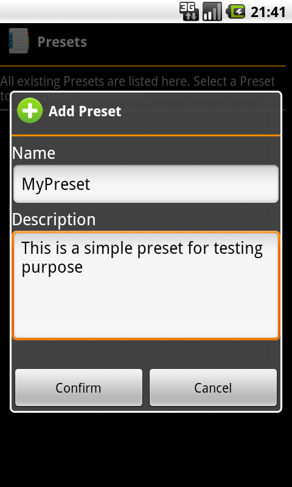{kind=link}
Das der Preset-Liste zugeordnete Menü (Geräte-Taste "Menü") ermöglicht mit "add Preset" das Hinzufügen bzw. Erstellen weiterer Presets. Anschließend öffnet sich ein Dialog, in dem der Name und die Beschreibung des neuen Presets festgelegt werden können. Nach dem Bestätigen öffnet sich automatisch der unter genannte Dialog, über den das neu erstellte Preset konfiguriert werden kann.
Preset ändern
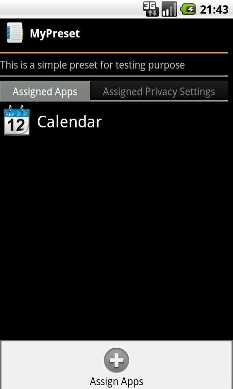{kind=link}
Im Details-Dialog des entsprechenden Presets (durch kurzes Antippen des gewünschten Presets in der Preset-Liste) können innerhalb des Reiters "Assigned Apps" weitere Applikationen dem Preset hinzugefügt werden. Hierzu wird das Menü (Geräte-Taste "Menü") geöffnet und die Schaltfläche "Assign App" angetippt. In der sich darauf öffnenden Applikationen-Liste werden die gewünschten Applikation durch Antippen selektiert, wobei gegenwärtig selektierte Applikationen grün hinterlegt werden. Über "Confirm" werden die selektierten Applikation schließlich dem Preset hinzugefügt.
Sollen weitere Privacy-Settings hinzugefügt werden, so muss zunächst in den Reiter "Assigned Privacy Settings" gewechselt werden. Durch Aufrufen des Menüs (Geräte-Taste "Menü") und Auswahl der Schaltfläche "Assign Privacy Setting" werden alle momentan installierte Ressourcen angezeigt. Die zu einer Ressource gehörenden Privacy-Settings werden angezeigt, indem die entsprechende Ressource durch Antippen "aufgeklappt" wird. Durch Antippen eines hierdurch angezeigten Privacy-Settings wird dieses dem Preset hinzugefügt.
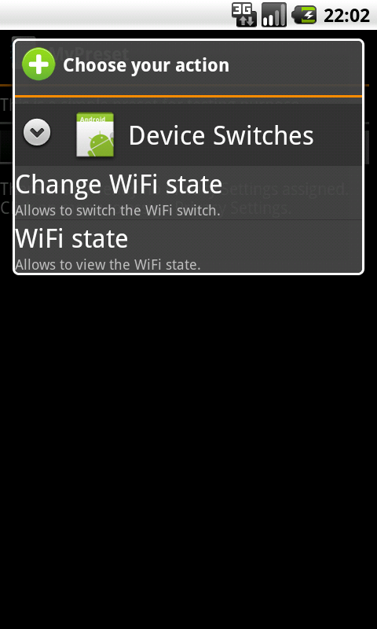{kind=link}
Details zur Applikation anzeigen: Durch Tippen auf eine Applikation und anschließendes Tippen auf "Show Details" im sich öffnenden Aktionsmenü lassen sich weitere Informationen zur entsprechenden Applikation anzeigen (siehe ).
Applikation aus Preset entfernen: Durch Tippen auf eine Applikation und anschließendes Tippen auf "Remove" im sich öffnenden Aktionsmenü wird die gewählte Applikation aus dem Preset entfernt.
Privacy-Setting Details: Durch Tippen auf ein Privacy-Setting und anschließendes Tippen auf "Show Details" im sich öffnenden Aktionsmenü lassen sich weitere Informationen zum entsprechende Privacy-Setting anzeigen.
Privacy-Setting ändern: Durch Tippen auf ein Privacy-Setting und anschließendes Tippen auf "Change value" im sich öffnenden Aktionsmenü lässt sich das entsprechende Privacy-Setting verändern (z. B. aktivieren/deaktivieren).
Privacy-Setting aus Preset entfernen: Durch Tippen auf ein Privacy-Setting und anschließendes Tippen auf "Remove" wird das gewählte Privacy-Settings aus dem Preset entfernt.
Ressourcen
Ressourcen installieren
{kind=link}
PMP-Ressourcen werden über den integrierten Marktplatz installiert. Dieser ist über die Schaltfläche "Resources" im Hauptmenü und anschließender Auswahl des Reiters "Available" zugänglich. Dort werden alle gegenwärtig Online verfügbaren Ressourcen angezeigt (Dies setzt eine bestehende Internetverbindung vorraus).
Durch Tippen auf eine Ressource werden weitere Informationen über diese angezeigt. Anschließend kann die Ressource über die Schaltfläche "Install" auf dem Gerät installiert werden und steht dann anderen Applikationen zur Verfügung.
Ressourcen anzeigen und deinstallieren
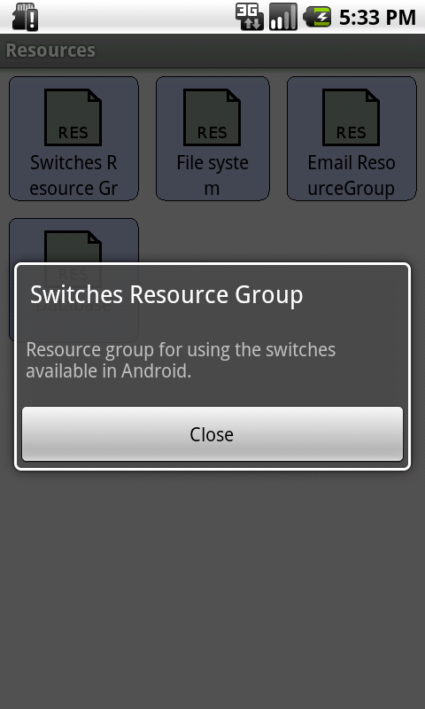{kind=link}
Über die Schaltfläche "Resources" im Hauptmenü lassen sich unter dem Reiter "Installed" alle auf dem Gerät installierten Ressourcen anzeigen. Durch Antippen einer Ressource werden weitere Informationen über diese angezeigt.
Der Details-Dialog, der beim Antippen einer Ressource erscheint, ermöglicht zudem das einfache Deinstallieren der entsprechenden Ressource. Hierzu genügt ein Tippen auf die Schaltfläche "Uninstall". Anschießend wird die Ressource vom Gerät entfernt. Wird die Ressource später nochmals benötigt, lässt sie sich über den Marktplatz wieder installieren.
Entwickler
Dieser Abschnitt richtet sich an erfahrene Benutzer, die die PMP um eigene Ressourcengruppen erweitern oder Anwendungen für die PMP erstellen möchten.
Ressourcen
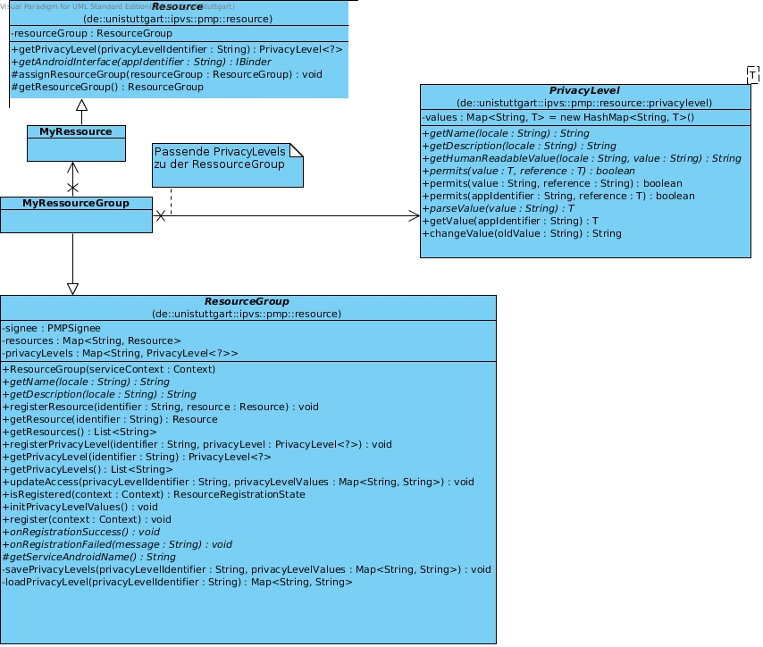{kind=link}
Inhaltlich zusammengehörende Ressourcen werden in der PMP intern in einer Ressourcengruppe zusammengefasst. Diese Ressourcengruppe kann dann als ganzes ausgeliefert und auf dem Gerät installiert werden. Das Erstellen einer Ressourcengruppe und deren Ressourcen gliedert sich in folgende Schritte:
- Bestimmen und Implementieren einzelner Ressourcen (z. B. jeweils eine Ressource um eine Datei in verschiedenen Bereichen des Geräts zu lesen, schreiben oder zu löschen)
- Festlegen einer Ressourcengruppe (z. B. Dateisystemzugriff) und Hinzufügen der erstellten Ressourcen zu dieser
- Definieren der zu der erstellten Ressourcengruppe passenden Privacy-Settings (z. B. Dateien auf der SD-Karte schreiben oder in allen Bereichen lesen)
- Hinzufügen der Privacy-Settings zu der Ressourcengruppe
Alle für das Erstellen einer Ressourcengruppe benötigten Klassen befinden sich im Paket "de.unistuttgart.ipvs.pmp.resource" der API-Bibliothek.
Neben den implementierten Klassen beinhaltet eine Ressourcengruppe zusätzlich eine Definitions-Datei. Diese XML-Datei (typischerweise im
asset
Ordner abgelegt) beinhaltet neben den Privacy-Settings der Gruppe auch
Informationen (u. A. Name und Beschreibung) über diese.
Der PMP liegen mehrere Ressourcengruppen und deren Quellcode bei. Diese können als Referenz für das Erstellen eigener Ressourcengruppe verwendet werden.
Definitions-Datei
Wie bereits erwähnt, legt die Definitions-Datei die Informationen der Ressourcengruppe und ihre Privacy-Settings fest. Bei dieser Datei handelt es sich um eine XML-Datei mit nachfolgendem Aufbau:
<?xml version="1.0" encoding="utf-8"?>
<resourceGroupInformationSet>
<resourceGroupInformation identifier="String">
<!-- Informationen über diese Ressourcengruppe (siehe ) -->
...
</resourceGroupInformation>
<privacySettings>
<!-- Liste der angebotenen Privacy-Settings (siehe ) -->
...
</privacySettings>
</resourceGroupInformationSet>
Diese XML-Datei trägt den Namen der Klasse, die später die Klasse ResourceGroup
erweitern wird (siehe ).
Die Datei wird im asset Verzeichniss abgelegt, so das sie in die
generierte apk-Datei mit eingebunden wird.
Informationen
Innerhalb des Abschnitts resourceGroupInformationSet werden alle benötigten
Informationen über die Ressourcengruppe hinterlegt.
Diese sind:
- Im Attribut
identifierein eindeutiger Schlüssel zur Identifikation der Ressourcengruppe. Dieser muss dem vollständigen Paket-Pfad entsprechen, unter dem sich die (später) implementierten Klassen befinden. Im untenstehnden Beispiel bedeutet dies, dass sich alle Klassen unterde.unistuttgart.ipvs.pmp.resourcegroups.filesystemzu befinden haben. - Einen Verweis auf ein Icon im Element
icon. Dieses sich imres-Verzeichnis befindende Symbol wird bei der Auflistung/Anzeige der Ressourcengruppen verwendet. - Der Name der Ressourcengruppe. Dieser besteht aus genau einem Element
defaultNamesowie beliebig vielen Elementenname. Beide Typen müssen das Attributlangbesitzen, über das die Sprache festgelegt wird, in die der Name verfasst wurde. - Die Beschreibung der Ressourcengruppe. Diese besteht aus genau einem Element
defaultDescriptionsowie beliebig vielen Elementendescription. Beide müssen das Attributlangbesitzen, über das die Sprache festgelegt wird, in der die Beschreibung verfasst wurde. Dieses Attribut sollte beidefaultNameunddefaultDescriptionübereinstimmen. - Zuletzt muss im Element
revisiondie Version notiert werden, in der sich die Ressourcengruppe momentan befindet. Daher sollte dieser Wert bei jeder Auslieferung einer neuen bzw. geänderten Version der Gruppe erhöht werden.
...
<resourceGroupInformation identifier="String">
<icon>res/drawable-xhdpi/icon.png</icon>
<defaultName lang="en">Filesystem</defaultName>
<name lang="de">Dateisystem</name>
<defaultDescription lang="en">Resource to read and write files.</defaultDescription>
<description lang="de">Ressource zum Dateien lesen und schreiben.</description>
<revision>2</revision>
</resourceGroupInformation>
...
Privacy-Settings
Jede Ressourcengruppe beinhaltet mehrere Privacy-Settings. Für jedes dieser
Privacy-Settings wird im Abschnitt privacySettings ein unter Abschnitt
privacySetting angelegt.
Dieser gliedert sich in:
- Das Attribut
identifier. Dieses dient u. A. dazu, um das Privacy-Setting innerhalb der Ressourcengruppe eindeutig identifizieren zu können. Nur so ist eine Abfrage, ob ein gegebenes Privacy-Setting aktiviert ist, möglich. Daher muss jeder identifier innerhalb einer Ressourcengruppe eindeutig sein. - Den Name des Privacy-Settings. Dieser besteht aus genau einem Element
defaultNamesowie beliebig vielen Elementenname. Beide müssen das Attributlangbesitzen, über das die Sprache festgelegt wird, in der der Name verfasst wurde. - Die Beschreibung des Privacy-Settings. Diese besteht aus genau einem Element
defaultDescriptionsowie beliebig vielen Elementendescription. Beide müssen das Attributlangbesitzen, über das die Sprache festgelegt wird, in der die Beschreibung verfasst wurde. Dieses Attribut sollte beidefaultNameunddefaultDescriptionübereinstimmen.
...
<privacySettings>
<privacySetting identifier="gen_r">
<defaultName lang="en">Generic read</defaultName>
<name lang="de">Generisches lesen</name>
<defaultDescription lang="en">Allows the app to read every file.</defaultDescription>
<description lang="de">Erlaubt es alle Dateien auf dem Gerät zu lesen.</description>
</privacySetting>
<privacySetting identifier="gen_w">
<defaultName lang="en">Generic write</defaultName>
<name lang="de">Generisches schreiben</name>
<defaultDescription lang="en">Allows the app to write everywhere.</defaultDescription>
<description lang="de">Erlaubt es auf dem ganzen Gerät zu schreiben.</description>
</privacySetting>
...
</privacySettings>
...
Erstellen einer Ressource
Ressourcen bilden die Grundlage einer Ressourcengruppe. Jede Gruppe benötigt
mindestens eine Ressource. Die Basisklasse einer Ressource bildet
Resource.
Um eigene Ressourcen zu erstellen, wird diese erweitert. Anschließend muss
die Methode getAndroidInterface() implementiert werden.
Zunächst wird ein AIDL-Interface erstellt, das die für Applikationen sichtbaren
Funktionen der Ressource beinhaltet (etwa Datei lesen). Nachdem das Android-SDK aus
diesem Interface automatisch ein Stub erstellt hat, wird dieses implementiert,
um die Funktionalität der Ressource zu liefern.
Die Aufgabe der Methode getAndroidInterface() besteht nun ausschließlich
darin, die Implementierung dieses Interface zurück zu geben, um hierdurch
Applikationen Zugriff auf die Funktionen der Ressource zu bieten.
Über den Parameter wird ein String übergeben, durch den die auf die Ressource
zugreifende Applikation identifiziert werden kann. Dieser sollte an die Implementierung des
AIDL-Interface weitergereicht werden, damit diese prüfen kann, ob die
Applikation zum Zugriff auf die einzelnen Funktionen berechtigt ist.
Erstellen einer Ressourcengruppe
Die erstellten Ressourcen müssen einer Ressourcengruppe hinzugefügt werden.
Hierzu wird eine neue Klasse erstellt, die die Klasse ResourceGroup
erweitert. Die Klasse ResourceGroup besitzt zwei abstrakte
Methoden die implementiert werden müssen.
Damit Anwendungen auf die Ressourcengruppe zugreifen können, muss eine
Identifikation der Gruppe geliefert werden.
Diese Identifikation muss mit dem Wert übereinstimmen, der zuvor in der
Definitions-Datei festgelegt wurde (siehe ).
Hierzu wird ein Konstruktor angelegt, der als Parameter genau ein Objekt
vom Typ IPMPConnectionInterface erhält.
Innerhalb dieses Konstruktors muss dann der Konstruktor der Basisklasse RessourceGroup
aufgerufen werden, wobei neben einer Referenz auf das erhaltene
IPMPConnectionInterface-Objekt eben diese Identifikation
übermittelt wird.
Um auf eine erfolgreiche oder fehlgeschlagene Registrierung der
Ressourcengruppe in der PMP reagieren zu können, stehen die beiden
Callback-Methoden onRegistrationSuccess() und
onRegistrationFailed() zur Verfügung. onRegistrationSuccess()
wird aufgerufen nachdem die Registrierungsanfrage der Ressourcengruppe von
der PMP erfolgreich bearbeitet wurde. Wurde onRegistrationFailed()
vom System aufgerufen, konnte die Gruppe dem System nicht hinzugefügt werden.
Über den String-Parameter wird der Grund des Fehlschlags übermittelt.
Unter Berücksichtigung des oben Erwähnten, könnte eine Ressourcengruppe wie folgt aussehen:
public class Filesystem extends ResourceGroup {
public static final String PACKAGAE_NAME =
"de.unistuttgart.ipvs.pmp.resourcegroups.filesystem";
public Filesystem(IPMPConnectionInterface pmpci) {
super(PACKAGAE_NAME, pmpci);
...
}
public void onRegistrationSuccess() {
Log.d("Registration was successfull");
}
public void onRegistrationFailed(String message) {
Log.d("Registration failed: " + message);
}
}
Hinzufügen der Ressourcen zur Gruppe
Innerhalb der erstellten Ressourcengruppe werden durch Aufruf der
Methode registerResource() die erstellten Ressourcen der
Gruppe zugeordnet. Um einen späteren Zugriff auf die einzelnen Ressourcen
zu ermöglichen, wird neben der Referenz auf die Ressource noch ein String-Kürzel
mit übergeben. Dieses Kürzel sollte in eine Konstante ausgelagert werden um
Fehler beim Zugriff durch Tipp-Fehler oder einen veränderten Wert auszuschließen.
Es muss darauf geachtet werden, dass das String-Kürzel eindeutig ist.
Eine bereits registrierte Ressource wird überschrieben, sollte eine
Ressource mit gleichem Kürzel hinzugefügt werden.
Beinhaltet die Gruppe sehr viele Ressourcen, sollte über eine Auslagerung der Ressourcen-Instanziierung und der String-Konstanten in eine separate Klasse nachgedacht werden.
public class Filesystem extends ResourceGroup {
public static final String PACKAGAE_NAME =
"de.unistuttgart.ipvs.pmp.resourcegroups.filesystem";
public Filesystem(IPMPConnectionInterface pmpci) {
super(PACKAGAE_NAME, pmpci);
...
registerResource("gen", new GenericResource());
...
}
...
}
Hinzufügen der Privacy-Settings zur Gruppe
Ähnlich der Ressourcen werden die erstellten Privacy-Settings durch
registerPrivacySetting() der Gruppe hinzugefügt.
Auch hier wird zur Referenzierung ein String-Kürzel mit angegeben, das
ebenfalls in eine Konstante ausgelagert werden sollte. Dieses
Kürzel muss mit dem Übereinstimmen, das für das betreffende Privacy-Settings
in der Definitions-Datei festgelegt wurde
(siehe ).
Da eine Gruppe viele Privacy-Levels enthalten kann, kann auch hier eine Auslagerung der Objekt-Instanziierung in eine eigene Klasse sinnvoll sein.
public class Filesystem extends ResourceGroup {
public static final String PACKAGAE_NAME =
"de.unistuttgart.ipvs.pmp.resourcegroups.filesystem";
public Filesystem(IPMPConnectionInterface pmpci) {
super(PACKAGAE_NAME, pmpci);
...
registerPrivacySetting("gen_r", new BooleanPrivacySetting());
registerPrivacySetting("gen_w", new BooleanPrivacySetting());
...
}
...
}
Über den zweiten Parameter wird der Typ des Privacy-Settings festgelegt. Um den Implementierungsaufwand zu verringern, bietet die API für häufig wiederkehrende Einsatzgebiete Standartimplementierungen an:
Für Wahrheitswerte
Handelt es sich um ein Privacy-Settings, das als Einstellungswert ausschließlich
einen Wahrheitswert ("Ja"/"Nein") erlaubt (z. B. "lesen erlauben"), so
sollte für das Privacy-Setting die fertig implementierte Klasse
BooleanPrivacyLevel verwendet werden.
Benutzerdefiniert
Sollte die Erstellung eines benutzerdefinierten Privacy-Settings erforderlich
sein, d. h. das Privacy-Setting lässt sich nicht durch eine bestehenden
Implementierung realisieren, so lässt sich ohne weiteres ein eigenes
Privacy-Setting implementieren. Hierzu muss die Klasse
PrivacySetting erweitert und ihre abstrakten Methoden
implementiert werden. Eine Liste aller zu implementierenden Methoden und
deren Aufgaben entnehmen Sie bitte der API-Dokumentation.
Applikationen
Das Erstellen von mit der PMP kompatiblen Applikationen unterteilt sich grob in das Definieren der von der Applikation angebotenen Service-Levels und dem Implementieren der Anwendungslogik.
Ausführliche Beispiele zur Festlegung der Service-Levels und zur Implementierung einer Applikation finden Sie in den mitgelieferten Beispiel-Applikationen, zu denen der Quellcode verfügbar ist.
Definitions-Datei
Jede Applikation, die in die PMP eingebunden wird, besitzt eine Definitions-Datei.
Diese XML-Datei trägt den Namen AppInformation.xml und
befindet sich im asset Verzeichnis.
Über diese Datei werden u. A. Informationen über die Applikation hinterlegt
sowie die von der Applikation angebotenen Service-Features definiert.
Der Aufbau der Definitions-Datei folgt dem Schema:
<?xml version="1.0" encoding="utf-8"?>
<appInformationSet>
<appInformation>
<!-- Informationen über diese Applikation (siehe ) -->
...
</appInformation>
<serviceFeatures>
<!-- Liste der angebotenen Service-Features (siehe ) -->
...
</serviceFeatures>
</appInformationSet>
Informationen
Der Informations-Abschnitt enthält Elemente, über die detaillierte Informationen zur Applikation hinterlegt werden:
- Der Name der Applikation. Dieser besteht aus genau einem Element
defaultNamesowie beliebig vielen Elementenname. Beide müssen das Attributlangbesitzen, über das die Sprache festgelegt wird, in der der Name verfasst wurde. - Die Beschreibung der Applikation. Diese besteht aus genau einem
Element
defaultDescriptionsowie beliebig vielen Elementedescription. Beide müssen das Attributlangbesitzen, über das die Sprache festgelegt wird, in der die Beschreibung verfasst wurde. Dieses Attribut sollte beidefaultNameunddefaultDescriptionübereinstimmen.
<appInformation>
<defaultName lang="en">Calendar</defaultName>
<name lang="de">Kalender</name>
<defaultDescription lang="en">This App is used to test
the privacy management platform. It provides simple calendar
functionalities.
</defaultDescription>
<description lang="de">Die App wird verwendet um die Privacy
Manangement Platform zu testen. Sie stellt einfache Funktionalitäten
eines Kalenders zur Verfügung.
</description>
</appInformation>
Service-Features
Die von der Applikation angebotenen Service-Features werden im Abschnitt
serviceFeatures notiert. In diesem Abschnitt wird für jedes angebotene
Service-Feature ein Abschnitt serviceFeature angelegt:
- Über das Attribut
identifierwird dem Service-Feature ein String zugewiesen, über den das Service-Feature in der Applikation und innerhalb der PMP eindeutig referenziert werden kann. Daher ist es wichtig, dass innerhalb der XML-Datei zu jedemidentifiermaximal ein Service-Feature definiert wird. - Über das Element
defaultNamesowie beliebig viele Elementenamewird der Name des Service-Features festgelegt. Beide müssen das Attributlangbesitzen, über das die Sprache festgelegt wird, in der der Name verfasst wurde. - Über das Element
defaultDescriptionsowie beliebig viele Elementedescriptionwird die Beschreibung des Service-Features festgelegt. Beide müssen das Attributlangbesitzen, über das die Sprache festgelegt wird, in der die Beschreibung verfasst wurde. Dieses Attribut sollten beidefaultNameunddefaultDescriptionübereinstimmen. - Zuletzt existiert noch ein Abschnitt
requiredResourceGroup. Dieser legt fest, welche Ressourcengruppe von dem entsprechenden Service-Feature benötigt wird. Hierzu folgt der Abschnitt diesem Aufbau:- Über das Attribut
identifierwird die Ressourcengruppe festgelegt, die vom Service-Feature benötigt wird. Dieser String ist für jede PMP-Ressourcengruppe eindeutig festgelegt und ist mit dem gleichnamigen Attribut in der Definitions-Datei der gewünschten Ressourcengruppe identisch (siehe auch ) - Über mindestens ein Element
privacySettingwird definiert, welches Privacy-Settings der Ressourcengruppe auf welchen Wert (bei Verwendung des Service-Features) gesetzt werden muss. Das Attributidentifierentspricht hierbei dem gleichnamigen Attribut in der Definitions-Datei der gewünschten Ressourcengruppe (siehe auch ). Über den Wert des Elements wird festgelegt, auf welchen Wert das entsprechende Privacy-Setting gesetzt sein muss.
- Über das Attribut
<serviceFeatures>
<serviceFeature identifier="read">
<defaultName lang="en">Read calendar entries</defaultName>
<name lang="de">Kalendereinträge lesen</name>
<defaultDescription lang="en">I can read calendar
entries.
</defaultDescription>
<description lang="de">Ich kann Kalendereinträge lesen.
</description>
<requiredResourceGroup
identifier="de.unistuttgart.ipvs.pmp.resourcegroups.database">
<privacySetting identifier="read">true</privacySetting>
</requiredResourceGroup>
</serviceFeature>
<serviceFeature identifier="write">
<defaultName lang="en">Write calendar entries
</defaultName>
<name lang="de">Kalendereinträge schreiben</name>
<defaultDescription lang="en">I can write
calendar entries.
</defaultDescription>
<description lang="de">Ich kann Kalendereinträge schreiben.
</description>
<requiredResourceGroup
identifier="de.unistuttgart.ipvs.pmp.resourcegroups.database">
<privacySetting identifier="modify">true</privacySetting>
<privacySetting identifier="create">true</privacySetting>
</requiredResourceGroup>
</serviceFeature>
...
</serviceFeatures>
Implementierung
Kommunikation mit der PMP
Zentraler Punkt der Kommunikation zwischen Applikationen und PMP ist der
so genannte AppService. Dieser regelt die Integration der
Applikation in die PMP und verwaltet deren Service-Features.
Viele Funktionen dieses Services sind bereits fertig implementiert und in
die PMP integriert, so dass nur die anwendungsspezifischen Funktionen
durch den Entwickler der Applikation festgelegt werden müssen.
Service in Manifest-Datei eintragen
Zunächst muss der Service in der Manifest-Datei bekannt gemacht werden. Hierzu wird der Datei folgender Service hinzugefügt:
<service android:name="de.unistuttgart.ipvs.pmp.service.app.AppService"
android:exported="true">
<intent-filter>
<action android:name="»Applikationsspezifischer Service-Name«" />
</intent-filter>
</service>
Einzig variabler Wert ist hier der Name der Aktion innerhalb des Intentfilters
("»Applikationsspezifischer Service-Name«"). Der Wert dieses
Attributes wird im weiteren Verlauf der Implementierung noch benötigt.
Dieser Wert sollte auf den Namen des Basis-Paketes gesetzt werden, unterhalb
dessen sich alle Klassen der Applikation befinden (Befinden sich alle
Klassen unterhalb von de.unistuttgart.ipvs.pmp.apps.ournewapp,
sollte der Eintrag <action android:name="de.unistuttgart.ipvs.pmp.apps.ournewapp" /> lauten).
Implementierung des Services
Wurde der Service in der Manifest-Datei bekannt gemacht, kann mit der
Implementierung der anwendungsspezifischen Funktionen begonnen werden.
Hierfür muss die Klasse app erweitert und ihre
abstrakten Methoden implementiert werden.
Eine zentrale Aufgabe des AppServices ist die Registrierung der
Applikation bei der PMP.
Um auf eine erfolgreiche oder fehlgeschlagene Registrierung reagieren zu können,
existieren die beiden Callback-Methoden onRegistrationSuccess()
und onRegistrationFailed(), wobei Letztere den Grund des
Fehlschlags über den Parameter erhält.
Dienste der PMP, Zugriff auf Ressourcen
Um jederzeit auf Dienste der PMP Zugreifen zu können, stehen eine Reihe so genannter
Conntector-Klassen zur Verfügung. Die Kommunikation mit der PMP
sollte immer über eine dieser Klassen erfolgen. Der Zugriff auf PMP-Ressourcen
erfolg ebenfalls über diese Konnektoren.
Die Verwendung jedes Konnektors läuft nach folgendem Schema ab:
- Durch Aufruf des Konstruktors wird ein Objekt des Konnektors instanziiert
- Über Methode
addCallbackHandler()des Konnektors wird diesem ein Callback-Handler zugewiesen - Innerhalb der
connected()-Methode des Callback-Handlers erfolgt der Zugriff auf die Methoden des Konnektors - Die Verbindung wird mit der Methode
bind()des Konnektors aufgebaut
Connector-Callback-Handler
Zugriffe auf Methoden bzw. Funktionen des Konnektors dürfen nur innerhalb des Connector-Callback-Handlers erfolgen. Andernfalls kann nicht sichergestellt werden, dass beim Zugriff auf die Methode die Verbindung erfolgreich aufgebaut wurde, was ein Fehlverhalten zur Folge hat.
Basis des Callback-Handlers ist die Schnittstelle IConnectorCallback.
Die Verwendung der Konnektoren ähnelt daher immer folgendem Aufbau:
TypOfConnector connector = new TypOfConnector(...);
// Add a callback handler
connector.addCallbackHandler(new IConnectorCallback() {
@Override
public void disconnected() {
// Exectuted when connection is closed
...
}
@Override
public void connected() {
// Executed when connection is established
...
}
@Override
public void bindingFailed() {
// Executed when binding with service failed
Log.e("Binding failed!");
...
}
};
connector.bind();
Anbindung an Ressourcen
Der wichtigste Konnektor bei der Entwicklung einer Applikation ist
PMPServiceConnector. Über diesen laufen alle
Zugriffe auf PMP-Ressourcen ab:
{kind=link}
Innerhalb der onConnect-Callback-Methode kann nun über die
Methode getAppService() des Objects der
PMPServiceConnector-Klasse eine Ressource angefragt werden.
Dies geschieht über einen Aufruf der Form:
connector.getAppService().getResource(pkgName, rgIdentifier, resourceIdentifier);Hierbei muss mit
pkgName der Name des Basis-Paket der
Applikation übergeben werden, wie er in der Definitions-Datei der Applikation festgelegt wurde.
Über rgIdentifier wird nun die konkrete Ressourcengruppe
festgelegt - dieser String entspricht dem identifier, wie
er in der Definitions-Datei der Ressourcengruppe definiert wurde.
Schließlich muss über den String resourceIdentifier noch
die genaue Ressource aus der Ressourcengruppe genannt werden. Auch
dieser Wert bezieht sich auf die Definitions-Datei der Ressourcengruppe:
Er muss mit dem Attribut identifier der entsprechenden Ressource
übereinstimmen.
War die Abfrage erfolgreich, so wird ein IBinder-Object zurückgeliefert
(andernfalls null).
Die Ressourcengruppe, die über den Konnektor angefordert wird, darf nicht
in den Klassenpfad (Classpath) übernommen werden. Um das durch
getResource() zurück gegebene Objekt korrekt casten zu
können, muss daher das entsprechende AIDL-Interface aus der Ressourcengruppe
heraus kopiert und in das Paket der Applikation übernommen werden.
Nachdem das Objekt dann auf dieses Interface gecastet wurde, ist der
Zugriff auf die Funktionen der Ressource möglich (vorausgesetzt, das
entsprechende Privacy-Setting ist gesetzt).
Versionshistorie
Version 1.3 (10.01.2012)
- Anpassung des Entwicklerkapitels weitestgehend abgeschlossen.
Version 1.2 (07.01.2012)
- Anpassung des Anwenderkapitels abgeschlossen.
Version 1.1 (30.12.2011)
- Beginnen der Anpassung des Anwenderkapitels an aktuelle Iteration.
Version 1.0 (01.10.2011)
- Letzte Prüfung des Handbuchs. Alle Kapitel fertig gestellt. Stand: 1. Iteration
Version 0.5 (29.09.2011)
- Mit Spezifikation abgeglichen, fehlende Abschnitte hinzugefügt
Version 0.4 (28.09.2011)
- Bildschirmfotos hinzugefügt und Anwenderkapitel überarbeitet
Version 0.3 (26.09.2011)
- Kapitel zur Entwicklung von Applikationen hinzugefügt
Version 0.2 (24.09.2011)
- Kapitel zu Grundbegriffen hinzugefügt
Version 0.1 (20.09.2011)
- Kapitel zur Ressourcen-Entwicklung fertig gestellt